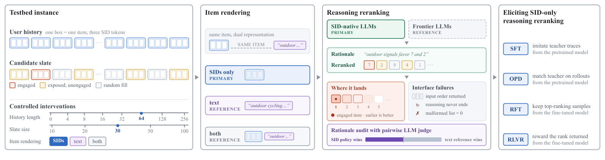
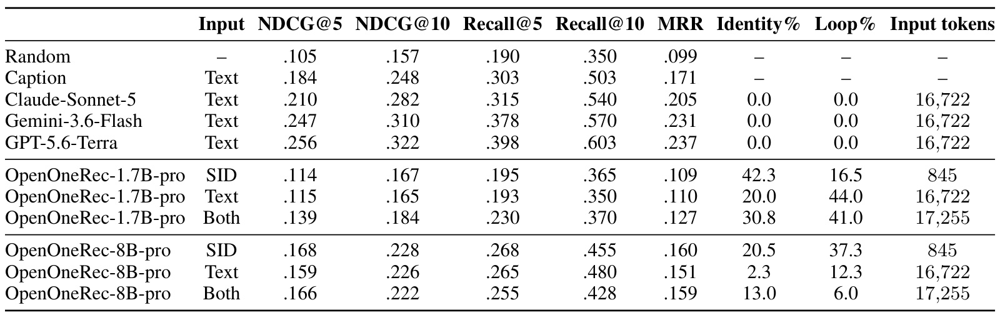
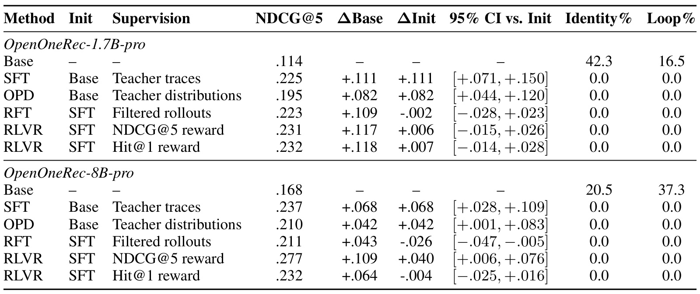
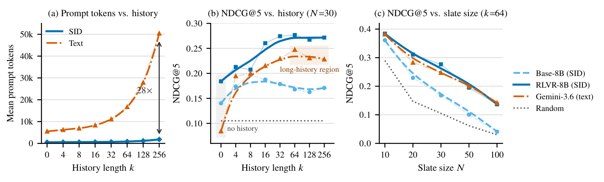
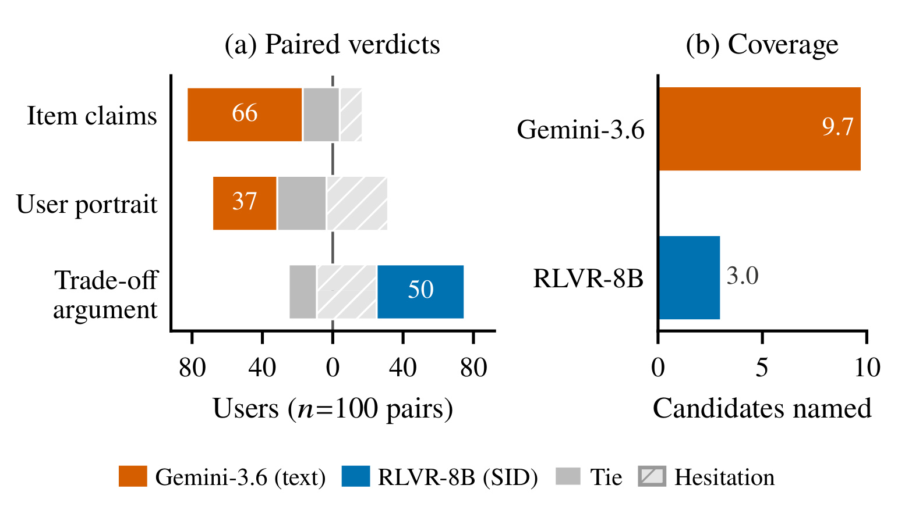
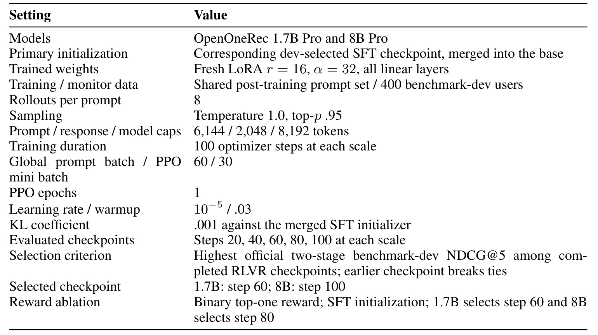

Google-ReRankID：只看语义 ID 的推理重排，能排对却未必说得对
Google 与多伦多大学的 Zhenwei Tang 等人研究只阅读语义 ID 的列表重排。第一作者双机构署名，Google 列第一。论文于 2026-10-16 UTC 发布 v1，本次核验日期为 2026-10-20。原文标题为 Reasoning Reranking with Semantic IDs as the Sole Item Representation，入口为 arXiv:2610.22797；官方代码已核验 HTTP 200。笔记核对了三十页全文与附录。
行为预训练让语义码可能携带偏好信息，却不保证模型会对外部候选列表排序；即使后训练让它排对，生成的具体物品描述仍可能失真。如何把紧凑表示、有效重排与可信理由分开检验，是这篇论文真正要解决的缺口。
1. 背景和问题
推荐系统的末级重排处理一个已经存在的候选集合：输入用户的历史行为和若干候选物品，再给出更合适的展示次序。它与生成式推荐的“根据历史直接生成下一个物品编号”之间有一道任务接口差距。前者必须理解候选的编号、比较同一个集合中的物品，并返回合法排列；后者主要学习历史到下一个物品的分布。一个模型即使在生成任务上吸收了大量协同信息，也未必能在陌生的列表任务上正确使用这些信息。论文首先把这种接口差距从表示是否包含偏好信号的问题中拆出来，再研究哪些后训练能够把已有能力引导出来。
语义 ID 的吸引力来自两个不同的来源。其一是压缩：每个物品以三个离散码表示，比一段标题或视频描述短得多，几百个历史物品可以保持相对短的输入。其二是协同信息：OpenOneRec 先量化物品文本嵌入来分配编码，再通过文本对齐和用户行为序列预训练来学习码元的嵌入。因此编码的分配来自内容，模型对码元的使用却可能携带行为统计。需要区分“码值由内容构造”和“码元嵌入经历行为训练”两件事，不能把语义 ID 直接理解成随机整数，也不能把它描述为完全脱离文本构建的纯行为编码。
已有研究大致沿着两条路线前进。生成式推荐能够在语义 ID 空间预测下一物品，并尝试在生成前输出语言推理；列表式大模型重排则阅读标题、描述或其他可读元数据，再解释和排序。这两条路线都没有直接回答：当历史和候选只显示语义 ID、没有任何物品描述时，同一个模型是否能排序，以及输出的解释还剩下多少可信内容。ReRankID 的核心贡献是提供一个受控测试床，避免只展示若干成功案例，就把紧凑表示、排序准确率和语言解释能力打包成同一种进步。
本文的“纯 SID”有明确边界。推理时可以给自然语言任务指令，模型也可以输出自然语言理由，但每个历史物品和候选物品只以语义 ID 出现。标题、字幕、类别和派生的用户画像都不进入输入。输出则使用候选的局部序号，因此同一条用户记录可以在 SID、描述文本、两者结合三种视图之间切换，而不必更改答案空间。这种安排使同一个模型在不同视图之间的差异可以解释为输入呈现的影响；但如果同时更换为闭源通用大模型，就同时更换了模型家族，比较只能作为参考。
测试床基于快手短视频交互和 OpenOneRec 语义词表，不能直接代表电商、音乐或所有工业推荐业务。测试集包含四百名用户，每人恰好一个被观察到的正例，显式互动与长观看正例各占一半。这样做让每个离线指标都能归结为那个正例最终排在什么位置，消除了多正例记分歧义，同时也限制了评测含义：没有观察到互动的候选不一定无关，负例之间究竟应该如何排序并没有完整人工标注。不能把单正例指标较高解释为整张列表的所有相邻关系都正确。
候选池优先放入正例和干净的曝光难负例，再用随机目录物品补足一百个。其他已知正例从负例池中排除，避免把用户明确喜欢的内容误作负例。候选数变化采用固定顺序的嵌套前缀，历史长度变化采用同一用户的嵌套近期序列，所以干预时保持用户、标签和另一条轴不变。锚点是六十四条历史、三十个候选，之后分别改变历史长度、候选规模和物品呈现。这比每个长度重新抽一批用户更适合解释原因，否则所谓长历史收益可能只是用户群变化。
论文特别关注一种容易被平均准确率掩盖的失败：模型给出合法数组，却只是复制输入顺序。另一个失败是推理始终不结束，反复抄写输入里的语义码，直到输出预算耗尽。这两种现象都与输出接口有关，却不完全等价。复制顺序可能通过格式校验而没有进行有效选择，循环则会触发额外抽取阶段。只看最终有没有十个整数，会高估系统掌握了列表决策的程度；只看自由推理阶段，又会漏掉统一抽取协议救回的输出。作者同时记录这些诊断量，才有条件讨论准确率究竟从哪里改善。
这里还存在一条重要的数据泄漏边界。测试用户与所有后训练用户分离，历史发生在目标行为之前，能够阻止本文自己构建的实例级训练泄漏。但 OpenOneRec 的预训练本来就要学习这些语义码承载的协同结构，表示层暴露被有意保留。于是零历史输入只能说明“当前提示没有用户历史或用户标识”，不能称为新物品、新用户都未见过的真正冷启动。零历史表现高于随机，支持候选码里存在与偏好有关的总体信号，却不能自动证明对陌生目录的泛化。
排序理由的评价因此必须另设一套证据。若模型排对正例，却声称某个视频讨论了实际上不存在的小说，业务指标和解释真实性会分离。语言上的对比论证是否顺畅，也不同于每个物品事实是否准确。论文把物品描述、用户画像、候选间权衡和覆盖范围拆开审计，是因为一个综合分数容易把这些维度混在一起。读这篇工作最有价值的视角，是同时跟踪输入压缩、接口修复、偏好排序和解释忠实四条链路，而不是只记住一个“约二十倍压缩”的宣传数字。
此外，单正例设计让观测行为的定义格外重要：长观看和显式互动代表不同强度的偏好证据，不能认为两类标签天然可互换。论文用平衡的正例层和后续分层统计缓解这种混淆，但未观察的相关候选依旧可能存在。这也使解释审计有独立价值，因为排序指标只约束已观测正例的位置，无法告诉我们模型为何把其余未标注内容互相交换。
2. 方法
2.1 配对测试床与有效输出协议
给定最近的用户历史和候选列表，模型先写理由，再返回十个不重复的候选序号。三种视图共享同一物品、用户和正例，仅改变物品的渲染函数。锚点之外的历史长度取零到二百五十六，候选规模取十到一百；每次只改变一个因素。本文并未设计新的语义量化器，而是固定 OpenOneRec 词表和一十七亿、八十亿参数检查点，研究下游重排是否能够利用已有的表示。固定表示系统，分别检验接口学习与排序收益，才不会把词表差异误算成后训练收益。

Figure 1 从左到右串起了实验的真实流程。最左侧以三枚码元组成一个物品，历史和候选来自同一套样本构造，正例、曝光未互动项和随机补足项分别着色。下方的三条干预轴说明改变历史、候选或呈现时，其他条件保持不变。中间部分将同一个物品显示为纯码、文本或两者，强调这不是三套不同数据。再向右，模型先给理由，然后给候选序号；最终评分看正例位置，并单独统计复制输入、推理不终止和非法列表。最右侧的训练路径尤其重要：监督微调和在策略蒸馏从基础模型出发，拒绝自训练与强化学习接在监督微调之后。若忽略这层依赖，就会把后两者相对基础模型的全部收益错误归到它们自己身上。图中另有一条理由审计分支，意味着文字解释需要独立评估，不能由排序得分代替。这张流程图本身没有证明理由推动了决策，它只定义了输出给读者的文字和最终列表如何被分别检查。框图所列强模型参考也没有与 SID 原生模型共享骨干，因此呈现方式的严格因果对照只能在同一模型三种输入之间进行。图中的箭头表示数据与训练依赖，读者可以沿箭头检查每条结果用了什么信息：文字教师只在相应监督构造时提供帮助，纯码推理阶段不会额外拿到同一条样本的字幕。可追溯的信息边界十分必要。这个界限让紧凑输入与特权监督并存，既不能把模型说成完全没有语言知识，也不能把训练时的字幕信息误写成测试时仍然可见。
自由推理没有产生合法列表时，统一的抽取阶段读取已有分析并尝试生成最终数组。有效响应需要闭合推理块，给出一个由十个互异、范围内整数构成的数组；无法修复的输出直接计零。主指标为端到端 NDCG@5，同时记录 NDCG@10、Recall@5、Recall@10 和 MRR。对同一批四百名用户做成对自助抽样，比较每个训练方法与自身初始化，置信区间不跨零才称显著。固定提示和展示顺序避免逐模型调参，另用预留排列和自然改写审计稳定性。格式协议统一并不消除模型差异，却使“更会输出合法列表”可以被单独测量。
2.2 教师监督与拒绝采样自训练
监督微调使用阅读描述文本的 Gemini 教师，而且教师在构造训练示范时知道哪个候选是观察正例。教师写三到五句简洁理由，将正例放在第一位，并比较一到两个备选；学生只看到物品匹配的 SID 输入。接收门槛包含格式正确、正例首位、候选指向明确、非空且不超过六百字符的理由。源池一万二千个独立用户，九条标注被拒绝后保留一万一千九百九十一条，再拆成一万一千零三十一条训练和九百六十条开发示范。这样的监督是带答案的事后教师轨迹，不能描述为教师在完全未知标签条件下自发得出的独立推理。
符号解释：这里的输入是 SID 视图的提示，目标响应包含教师理由和最终数组，参数代表可训练的 LoRA 权重，内层求和遍历响应位置。整条理由与排序一起受到下一个词预测监督，所以学生可能学到有效的比较表达，也可能模仿一些它无法从输入中确认的物品细节。两种规模都冻结基础权重及 SID 嵌入，只更新线性层上的适配器。因而排序改善更接近“学会调用固定表示完成任务”，而不是本实验又重新学习了一遍码元嵌入。
拒绝采样自训练从各自选好的监督微调检查点出发，对同一条 SID 提示采八个回答。验证器按生成顺序保留第一个已经结束、格式正确、不是原样输入顺序、并且正例首位的回答，每条提示最多留下一个。验证器能看到正例标签，模型输入看不到。随后对保留集合继续做似然训练，目标形式与监督微调相同。这个阶段是离线筛选再训练，不是不断用当前策略产生即时梯度的在线强化学习。它偏向学生已经会生成的成功模式，所以通过率随候选变多而下降，并可能使最终训练样本偏向较容易的列表。
2.3 在策略蒸馏与分级奖励强化学习
在策略蒸馏重新从基础模型建立学生，冻结同规模监督微调模型作为教师。学生先采样轨迹，教师在学生实际走到的前缀上给出分布，双方看到相同 SID 输入。教师不再阅读字幕、正例或答案提示，也没有任务奖励。为控制开销，只保留教师概率最高的三十二个词并重新归一化，而学生概率仍在完整词表上归一化。这是前向蒸馏的计算近似，不是奖励模型给每个响应打一个标量分数。
符号解释：状态由提示和学生已生成的前缀构成，集合表示教师的前三十二个高概率词，两个概率分别属于冻结教师与学生。损失只覆盖响应位置，先在序列内取均值，再跨小批量平均。它能够提供稠密的接口学习信号，但教师本身的知识和偏差也会被传递。每条训练提示只查询一条学生轨迹，总共六千条，使用二百次更新并在八个检查点中选开发集最高者；这些预算与强化学习不同，方法间不能解释成完全相同计算量的竞赛。
强化学习从监督微调初始化，使用 GRPO，每条提示采八个响应。验证器只根据合法格式和正例排名计算分级奖励，没有另外奖励理由长度、内容准确、覆盖物品数或兴趣表达。正例进前五名时给予对数折损的连续等级，其他情况都为零；这与单正例 NDCG@5 完全一致。二值消融只给第一名奖励，其余数据、优化和选点设置相同，可以直接检验“接近正确也给分”是否有帮助。
符号解释：响应记为输出轨迹，排名从一开始，优势是同提示八个响应内的奖励标准化结果。它依靠组内差异提供信号，不需要学习价值模型。每条轨迹的所有词共享同一个优势，所以奖励发生在最终排序上，并没有逐句验证理由。标准差为零的数值处理随发布的实现配置，不能从概念公式推断出额外的语义监督。
符号解释：概率比比较当前策略与产生采样组的旧策略，截断范围限制一步更新幅度，参考分布是合并后的监督微调初始化，系数取千分之一。期望覆盖采样响应位置。这套目标能够选择有利于排序的文字和数组组合，却无法保证文字内容是决策的真实原因，更无法保证它描述的小说名称或具体视频事实为真。
3. 实验结果
基础模型的主要障碍在接口

Table 1 的每行都在四百名用户、六十四历史、三十候选下测量。随机参考的 NDCG@5 为零点一零五，描述嵌入质心参考为零点一八四；纯 SID 的一十七亿参数基础模型为零点一一四，八十亿模型为零点一六八。后者相对随机的成对收益为零点零六三，区间零点零二七到零点零九九，支持存在可用信号；前者的零点零零九区间跨零。表右端同时表明，两个 SID 基础模型复制输入顺序的比例分别为百分之四十二点三和二十点五，推理循环分别为百分之十六点五和三十七点三。把同一个八十亿模型改为文本或混合输入，得分是零点一五九与零点一六六，没有一致改善。较小模型读文本时循环甚至升至百分之四十四。可读描述改变了失败形态，却没有自动教会模型列表接口。三条通用模型文本参考达到零点二一零、零点二四七和零点二五六，但它们同时更换了骨干，因此不能据此说“文本本身必然优于语义码”。输入 token 全部用同一个 OpenOneRec 分词器测量，是可比的长度尺，不是各服务提供商的账单。
抽取阶段的影响也值得单独看。基础模型在 SID 锚点最终都能输出合法列表，但一十七亿和八十亿分别有百分之十七点五、三十七点五的用户需要抽取。若只按自由推理阶段计分，得分从零点一一四降到零点一零一，从零点一六八降到零点一一三。八十亿模型的八十二个原样排序中，七十五个来自循环之后的强制抽取。另一个案例即使分析包含正确正例，却返回重复的四个序号组成十项数组，去重后不足十项，只能记零。这些案例说明格式修复确实是任务的一部分，也说明格式正确不能替代真正排序。
不同后训练必须与自身初始化比较

Table 2 把基础模型、监督微调、蒸馏、拒绝自训练和两种强化奖励放在同一协议下，但最有信息的是初始化列。一十七亿模型监督微调从零点一一四升到零点二二五，八十亿从零点一六八升到零点二三七；两者的原样排序和循环都降为零。八十亿分级强化学习进一步达到零点二七七，相对自己的监督初始化增加零点零四零，成对百分之九十五区间为零点零零六至零点零七六，才是强化阶段本身的显著收益。一十七亿分级强化只有零点零零六的增加，区间为负零点零一五至零点零二六，不能称显著提升。八十亿二值奖励得到零点二三二，对监督初始化的差异跨零；直接对比分级与二值，分级高零点零四五，区间零点零一三至零点零七七。分级信用在较大规模有效，这个条件必须与结论一起保留。反过来，八十亿拒绝自训练为零点二一一，虽然高于基础模型，却显著低于其零点二三七的初始化，差值负零点零二六，区间负零点零四七至负零点零零五。若只报相对基础模型，就会把一个退步的追加训练阶段误报为成功。
最强 SID 模型的 Recall@10 为百分之六十四，Gemini 文本参考为百分之五十七，GPT 文本参考为百分之六十点三。论文称其与强文本参考相当，是结合成对差异的不确定性判断，不应转写成对所有闭源模型全面胜出。监督微调两个规模之间的差异也没有显著性，不能只凭大模型分数稍高就得出规模规律。所有后训练方法都优于描述质心参考，但目标、训练轨迹来源和预算各异，结果更适合回答哪些常用手段能引出接口行为，而不是给算法做脱离条件的永久排名。
在策略蒸馏从基础模型达到零点一九五和零点二一零，分别恢复约百分之七十三、百分之六十一的教师收益，说明仅靠学生前缀上的教师分布，也能传授列表接口。八十亿蒸馏仍有五个用户最终格式无效，因此“复制和循环为零”不等于所有输出百分之百有效。拒绝自训练的保留率则暴露筛选偏差：八十亿在十候选保留百分之五十四点三一，百候选只剩百分之十四点一四。一十七亿对应百分之六十二点零七和十二点七九。整体保留一千九百一十二与一千九百四十条。数据越难越少留下，继续训练可能放大容易样本，而不是修复最难的比较任务；这与八十亿追加自训练下降一致，但论文没有单独实验确认它就是唯一原因。
历史、候选规模与输入成本

Figure 2 同时展示三个独立问题。左图的锚点 SID 输入八百四十五 token，文本为一万六千七百二十二；到二百五十六历史时分别是一千八百零五和五万零四百一十二，差距接近二十八倍。它证明的是提示长度压缩，没有给出完整端到端延迟或线上吞吐测量。中图固定三十候选，八十亿强化模型大部分增益在十六条历史时已经形成，虽然训练最短历史为三十二，之后平台保持到二百五十六。文本参考在六十四附近达到高点，继续加历史没有显著收益；二百五十六相对六十四变化为负零点零一九，区间跨零，所以宜称停止改善或点估计回落，不能说已经显著退化。右图固定六十四历史，候选由十增至一百时所有分数下降，包括随机参考，因为单正例面临更多竞争。强化模型与文本参考大致平行下降，百候选时相当，基础模型则接近随机。曲线的标记才是实测点，平滑连线用于趋势展示，不代表中间每个长度都有实验。三幅图不能合并成“任意长历史、任意大候选都免费有效”的结论。
零历史条件下，最强 SID 模型相对随机增加零点零七九，区间零点零三九到零点一一八；同批候选的文本参考与随机难以区分。由于提示没有历史和用户标识，收益只能来自候选 SID 所携带的物品层信号。不过预训练表示暴露仍然存在，因此合理解释是行为预训练给码元留下了与总体偏好有关的信息。它不是证明模型凭空恢复了这个用户的个性，也不是新物品完全无交互条件下的冷启动实验。长历史案例中，同一用户的聊天截图和情感告白兴趣在更早记录中反复出现，强化模型将正例保持第二；文本参考则受新增一段明星换装内容影响，把正例从第一降到第七。这是曲线现象的个案说明，不是普遍机制的因果证据。
排得好与说得真出现分离

Figure 3 使用一百名测试用户实际生成过的理由，没有重新生成“更好看的解释”。裁判同时阅读字幕形式的历史与候选、匿名的两段理由和两张排序，分别判断物品主张、用户画像、权衡论证、覆盖和整体质量。每对材料交换顺序再判断，两次方向一致才计明确胜负。强化模型在权衡论证上以五十比零胜出，但物品主张以零比六十六落后，用户画像以零比三十七落后。右图显示它平均只提三名候选，文本参考提九点七名，覆盖分别为零点二九七和零点九七一。这让“说得更会比较”与“描述更准确、更完整”明确分开。未一致的判断保留为平局、犹豫或翻转，不能把五十比零理解成另外五十用户也支持强化模型。完整附录里物品主张还有二十一平局、十二犹豫和一次翻转；用户画像有二十八平局、三十五犹豫；权衡有十六平局、三十四犹豫。审计整体更偏好文本参考，但覆盖本来就显著不同，综合结果不宜压成单个推理能力排名。
程序计算的首次提及顺序与最终排名 Kendall 相关在 SID 模型为一，在文本参考为零点九八三，只在至少提及两个且进入最终列表的候选间计算。未提及的候选被排除，避免覆盖率污染顺序一致性。这也解释了为什么完美相关不等于完整解释：只按最终前三名顺序谈三项，很容易有一的相关，却没有覆盖剩余七项。裁判的覆盖判断与程序赢家在九十八个非平局用户全部一致，另做了交换候选编号、换用其他用户理由、截断到首选三类受控损坏，提供一定可信度检查，但裁判仍是单一模型，样本也只有一百人。
案例中强化模型确实把正例排第三，而文本参考排第八，可强化理由编造了一部小说名称，候选和历史中都没有出现该名称。它对“情感小说解说”这个宽兴趣的把握可以是对的，对具体物品的事实仍可能是错的。这恰好符合训练目标：最终正例进前五就有奖励，物品名真伪没有直接约束。成对审计评价的是呈现给读者的理由质量，作者没有把理由当作内部决策的忠实记录，也没有通过干预理由来证明它导致排名。将这项实验称为“证明链式推理提高推荐因果解释”会超出证据。
训练预算与可重复性的边界

Table C.6 公开了影响复现的训练常数。两个规模都从开发集选好的监督微调模型合并后再建立新的适配器，秩十六、缩放三十二，八响应一组，采样温度一、核采样阈值零点九五。提示、响应、模型总上限分别为六千一百四十四、二千零四十八、八千一百九十二 token，每个规模跑一百次优化更新。全局提示批六十、PPO 小批三十、每批一轮，学习率十的负五次方，预热零点零三，KL 系数零点零零一。每二十步评估一次，以四百开发用户的官方两阶段得分挑选；一十七亿选六十步，八十亿选一百步。二值奖励消融仍使用同样训练路径，一十七亿选六十步、八十亿选八十步。表中细节支持对奖励粒度的受控比较，也提醒读者这些是开发集挑选后的检查点，不是随便一个训练时刻。用户成对区间衡量测试用户抽样不确定性，不覆盖重新训练多个种子的波动，不能把区间误当成所有训练随机性已经被消除。
附录的提示审计中，自然改写相对原提示的三种变化均在重复运行噪声范围内，区间跨零；三种候选展示顺序的文本参考得分为零点二四七、零点二三四、零点二四五。这增强了参考结果的稳定性，但不替代每个 SID 模型的全部排列审计。分层结果也提示平均数的内部差异：八十亿监督微调在长观看正例上的增益零点零三七，区间跨零，在显式互动正例上增益零点一零零，区间排除零。四百用户和单一短视频域仍然有限，曝光候选加随机补足的离线构造也没有证明线上展示策略、满意度或长期多样性改善。
4. 总结
ReRankID 最扎实的发现是：一个已经具有 SID 表示和行为预训练的模型，面对外部提供的候选列表时仍可能不会正确使用接口；少量明确的任务后训练能消除复制输入与推理循环，再把已有协同信号转化为可测量的排序收益。八十亿模型的分级强化阶段相对自己的监督初始化继续显著改善，但较小模型没有同等证据，拒绝自训练还可能退步。实践中若正在迁移生成式推荐骨干到重排，先确认它会输出合法、非原样的列表，再评估真实排序，往往比只加长输入或直接追加文本描述更能定位问题。
压缩收益也有很明确的可用范围。纯码把物品表示从长描述压到几个词元，允许更长历史留在上下文里；在本文范围内，后训练模型确实保持了历史收益。但输入 token 下降不是线上时延、显存、吞吐和总成本同比下降的直接证据。自然语言理由仍有输出开销，候选规模增长仍让单正例排名变难，推理协议还有抽取阶段。若要在具体服务中选择这种方案，需要测量真实推理路径和历史分布，而不能简单把二十倍提示长度差当成二十倍业务效率。
解释忠实性是更值得继续研究的缺口。监督教师知道答案并阅读字幕，学生却只看码，训练出来的语言会继承教师表达而缺少同等可核实的信息。强化学习只验证排名，又没有奖励具体物品事实正确，因此排序指标提升和语言幻觉并存完全符合目标设计。对外展示解释时，应该把候选内容事实的核对与偏好排序分开处理；本文没有实验验证某一种检索、约束解码或额外事实奖励能够解决问题，因此这些只能是后续研究方向，不能冒充论文已经完成的修复。
这份测试床也提供了一种较好的研究习惯：固定用户和候选做配对表示，沿单一轴改变历史或规模，保留无效输出并计零，用成对区间判断追加训练的收益，再用独立审计检查读者能看到的理由。这套证据结构能够防止几个常见误读，包括把相对基础模型的总收益归给最后一个阶段，把零历史叫作真正冷启动，把同一输出里的语言连贯叫作因果解释，以及把一个强参考分数误作严格表示对照。它的结论由快手短视频、OpenOneRec 词表、四百测试用户和本文训练预算共同限定。
后续最有区分度的验证会是换一个真正未暴露的物品目录、换业务域、增加多正例或人工候选比较标注、重复训练种子，并把理由中的物品主张逐条与可见证据对齐。这样的实验才能回答当前观察来自协同表示、特定候选构造、任务接口学习，还是更普遍的偏好推理能力。在这些证据出现之前，本文已经足以支持“紧凑标识可用于高质量重排，并且理由需要单独治理”，还不足以支持“只要排得好，模型对内容就理解得同样好”。本文为论文调研与技术学习记录，实验数字来自原文，工程延伸均属于笔记分析。
对工程复现还要保留一个细节：发布代码能够核查解析器、奖励和每用户结果，但外部接口模型的版本别名与随机解码可能随服务变化，重复结果应记录实际版本和调用条件。只有把这些条件与本地语义模型版本一并固定，后续比较才能判断差异来自方案修改还是测量环境变化。